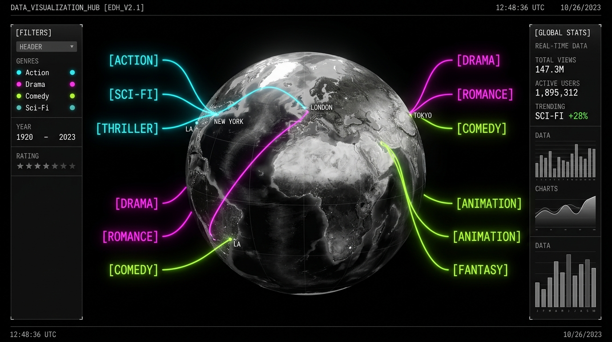
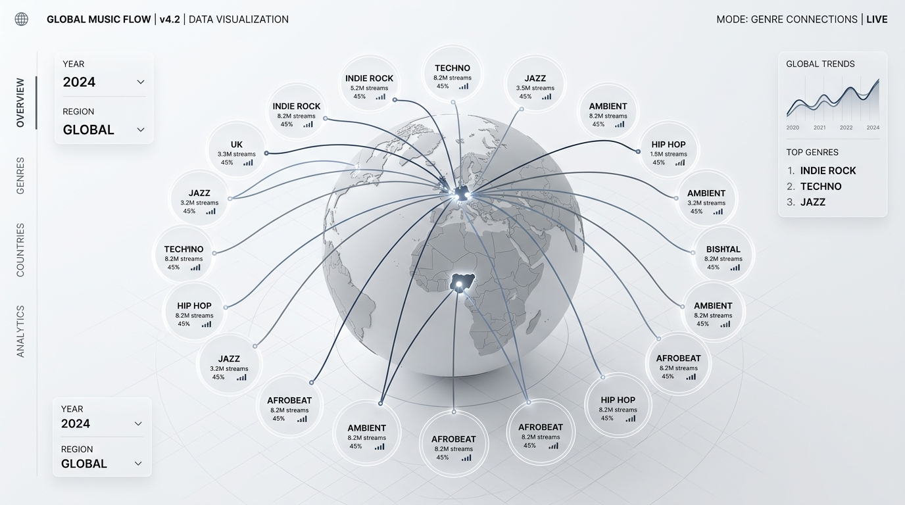
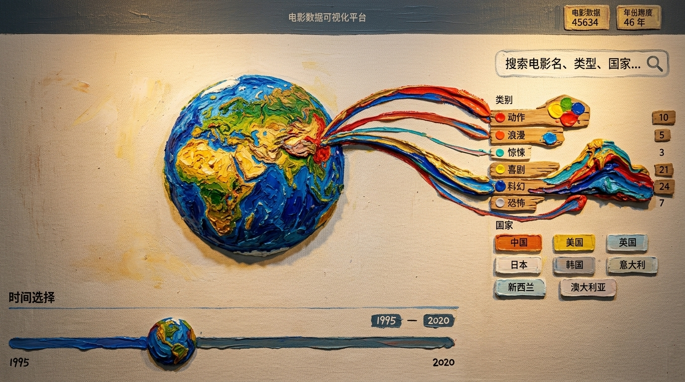

国家天然带空间属性。先让用户知道电影从哪里来，比先读数字更容易建立整体感觉。

School Project
全球电影数据的空间化探索原型
把全球电影数据做成一张可探索的空间关系图
这个项目要回答的是：当国家、类型、票房和时间同时出现时，用户能不能先看懂整体关系，再顺着交互继续看细节。
-
01
重定义命题
先把它定义成空间探索入口，而不是替代 2D 趋势图。
-
02
拆开维度
把国家、类型、票房和时间分别交给更合适的视觉通道。
-
03
先做骨架
先验证主视图入口、筛选路径和细节查看方式，再进入视觉阶段。
-
04
最后复盘
AI 用来加速发散，但关键判断仍回到可读性和信息层级本身。
Observation 01
我想先看到电影从哪里来，又流向哪里
这页想回答什么
国家来源和类型去向，能不能在同一屏里先被看清。
表格能告诉我数值，普通图表能告诉我局部趋势，但都很难先把这张关系图整体端出来。所以这页先做整体分布，再把时间和细节往后放。
- 国家是空间关系： 先看来源，比先读数字更容易建立感觉。
- 类型是方向关系： 多个国家流向同一类型时，路径比单点更好记。
- 时间做切片： 先看一个阶段，再比较变化，负担更小。
先拆清维度，再决定画面
动手前，我先不急着画地球，而是先问清楚：这四个维度里，什么适合用空间看，什么适合用强弱看，什么必须交给时间来处理。
判断原则
位置、聚合、强弱、时间不是同一种信息。如果一开始就把它们全塞进 3D 里，用户看到的只会是一团热闹。我先把每个维度分配给更合适的视觉通道，再决定 3D 到底承担什么。
类型不是起点，而是去向。放到外围之后，每条路径的终点会更清楚，关系也更容易记住。
票房不需要先逐个读数。先用视觉强弱把“大关系”扫出来，细数字再留给后续查看。
时间最容易把主视图搅乱，所以只让它负责切年份，不直接挤占 3D 画面的注意力。
决定用 3D 之前，我先把它和 2D 分开判断
如果目标是精确比较几十年的涨落，2D 会更直接；如果目标是先把国家、类型和路径关系整体端出来，3D 更合适。所以这页不是拿 3D 取代 2D，而是让它先承担“入口”。
横轴就是时间，起伏一眼能读出来，适合回答“哪几年变了、变化有多大”。
这次取舍
让 3D 先回答“它们怎么连在一起”
先把国家到类型的空间路径整体端出来，再用时间轴和局部状态继续追问具体年份和具体数据。
国家、类型和路径能同时进第一视野，适合回答“它们彼此怎么连、整体分布长什么样”。
Validation
先把核心体验压进低保真骨架
视觉之前，我先看三件事：主视图能不能成为入口，筛选是否顺手，细节会不会打断主线。


入口够不够清楚： 用户会不会先看主视图，而不是先读说明。
联动够不够顺手： 筛选、搜索和时间切换能不能都回到同一主视图。
细节够不够轻： 局部信息出现时，不能把用户硬拉出整体浏览。
Workflow
AI 帮我加快发散，但关键判断还是自己做
AI 主要用来加快发散和搭演示骨架。真正要自己判断的，还是 3D 是否合适、什么信息该先出现。
先把信息结构、关键界面和交互节奏搭出来。
用来快速发散视觉方向，看不同氛围是否成立。
用来搭可演示的状态和骨架，不承担真实 3D 逻辑。



Interaction
把全局视图与局部反馈组织成一次探索体验
主视图负责看全局，下面几张局部图分别承担筛选、选中、计数和时间反馈。
筛选面板先帮用户压掉无关数据，让视线先回到当前想看的国家和类型。
筛选标签直接显示对应数量，选中结果只做局部放大，不打断整张图的阅读。
时间轴负责切年份，也顺手告诉用户这一年数据量大不大，避免切完以后没有体感。
我把局部反馈压成四种轻状态
所有细节都原地发生，不另开页面。
先收窄范围，减少无关线条的噪音。
需要时再露出信息，不把主视图压成详情页。
搜索不是跳转，而是快速回到那条具体路径。
通过年份切换当前密度，不让时间和主视图抢注意力。

筛选先把无关线条压掉，让用户更快进入当前问题。

点中具体数据后，只补这一条的信息，不把用户带离主视图。

用户不必再猜当前筛选有没有结果，数量会直接回应操作。

切换筛选后，计数同步变化，方便快速比较不同国家的类别规模。

时间轴不只负责切年份，也帮助用户先感知这一年的数据密度。
做完以后，我更确定了两件事
好的可视化，不是把所有维度塞进一个视图，而是给每个问题安排合适的入口。
3D 适合做空间关系的入口
国家来源、类型轨道和关系路径能同时进第一视野，整体分布感更容易建立。
单靠 3D 讲不好长期趋势
如果只靠球体变化去读趋势，认知负担会很重。下一步要让 2D 补上趋势概览，和 3D 分工。
如果继续做，我会往这三个方向收
这版已经搭起结构，但还停在探索原型。
让 3D 看空间关系，2D 看长期起伏，各做各擅长的事。
继续靠筛选、高亮和分层显示，把高密度时期的噪音压下去。
把电影详情、国家分布和类别对比补成更完整的二级浏览。
这更像一次可视化判断的训练
它让我更明确地意识到，先决定什么该先被看见，比一开始就加维度更重要。
好的探索型可视化，先让关系可进入，再让细节可追问。
这次最重要的收获，是把 空间关系、时间切片 和 局部反馈 拆开，再决定每一层界面该做什么。